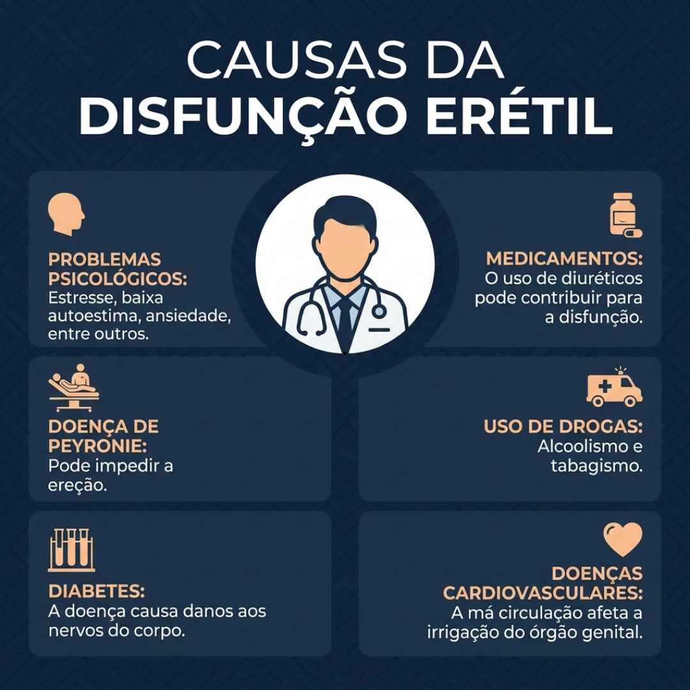

Atendimento discreto para saúde masculina
Converse com um profissional e entenda, com sigilo e acolhimento, quais fatores podem estar afetando sua confiança e qualidade de vida.
- Atendimento com discrição
- Orientação individualizada
- Contato inicial pelo WhatsApp
Entenda possíveis causas

Questões físicas, emocionais e hormonais podem influenciar o desempenho e o bem-estar masculino. Um atendimento adequado ajuda a avaliar o seu caso com mais clareza e segurança.
Quero receber orientação